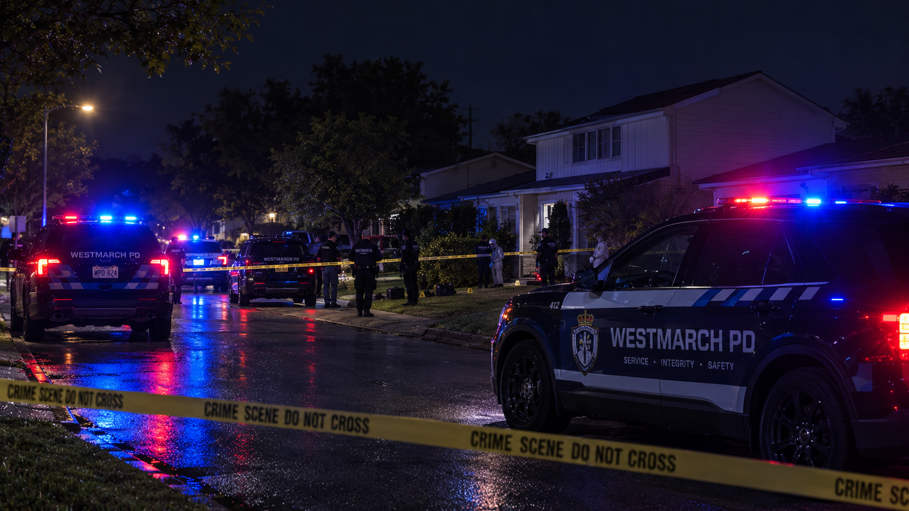

Westmarch PD recruit officer arrested after two civilians murdered
A recruit officer with the Westmarch Police Department has been arrested in connection with the deaths of two civilians. The circumstances surrounding the killings remain under investigation.

A Westmarch Police Department (WPD) recruit officer has been arrested following the deaths of two civilians, in a case that has raised serious questions about police conduct and accountability in the state.
The officer was taken into custody after investigators began examining the circumstances surrounding the two deaths. Authorities have not yet released the officer's identity or provided details about a possible motive.
What we know
- A Westmarch PD recruit officer has been arrested.
- Two civilians have died.
- The incident is being treated as a suspected double homicide.
- The officer's identity, alleged motive and the precise circumstances have not been publicly established in this report.
Investigation underway
Investigators are working to establish the events leading up to the deaths and the recruit officer's alleged involvement. The investigation will need to determine whether the officer was on duty, whether police equipment or a service weapon was involved, and whether any prior concerns had been raised.
No conclusions should be drawn about the department's wider recruitment or supervision practices until the relevant evidence has been examined. Any allegations against the arrested officer remain subject to the criminal justice process.
Questions over police oversight
The arrest is likely to prompt scrutiny of the standards expected of police recruits, the supervision of officers in training and the mechanisms available to investigate serious allegations against serving police personnel.
Westmarch PD's institutional response and any decision to commission an independent review have not been confirmed in the information available to 6NEWS.
More to come
6NEWS will update this report as further verified details become available, including any formal police statement, court appearance or government response.